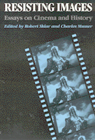

Essays that raise questions about film history, historiography, and cultural theory
Essays that raise questions about film history, historiography, and cultural theory


 Essays that raise questions about film history, historiography, and cultural theory
Essays that raise questions about film history, historiography, and cultural theory

|  |
Resisting ImagesEssays on Cinema and Historyedited by Robert Sklar and Charles Musserpaper EAN: 978-0-87722-738-0 (ISBN: 0-87722-738-1) |
This collection of articles addresses questions about film history within the context of recent debates over historiography and cultural theory. Examining the relationship between cinema history and social history, the authors are concerned with revealing ways in which ideological and political struggle is treated in film. In selecting these essays, editors Robert Sklar and Charles Musser sought breadth and variety both in chronological and geographical terms. The articles here touch on some aspects of film history in every decade of the twentieth century (through the 1980s) and cover filmmaking practices in or national cinemas of more than a dozen countries in regions ranging from Asia, North and South America, and Europe to the Middle East.
Introduction – Charles Musser and Robert Sklar
Oh Althusser!: Historiography and the Rise of Cinema Studies – Robert Sklar
Work, Ideology, and Chaplin’s Tramp – Charles Musser
Cinema and Class Conflict: Labor, Capital, the State, and American Silent Film – Steven J. Ross
Cinema and Everyday Life: Soviet Worker Clubs of the 1920s – Vance Kepley
Left Political Filmmaking in the West: The Interwar Years – Jonathan Buchsbaum
6. Ideology Elsewhere: The Contradictions of Italian Fascist Cinema – Vito Zagarrio
The Female Spy: Gender and Nationality in World War II British Film – Antonia Lant
The Japanese Tragedy: Film Censorship and the American Occupation – Kyoko Hirano
Risorgimento History and Screen Spectacle: Visconti’s Senso – Leger Grindon
Master Narrative/Counter Readings: The Politics of Israeli Cinema – Ella Shohat
Transformations of National Allegory: Brazilian Cinema from Dictatorship to Redemocratization – Robert Stam and Ismael Xavier
An "Other" History: The New Latin American Cinema – Ana M. Lopez
Robert Sklar is Professor of Cinema Studies at New York University. He is the author of Movie-Made America and Prime-Time America.
Charles Musser teaches film studies at New York University and Columbia University and is the author of The Emergence of Cinema: The American Screen to 1907.
Critical Perspectives on the Past, edited by Susan Porter Benson, Stephen Brier, and Roy Rosenzweig.
Critical Perspectives on the Past, edited by Susan Porter Benson, Stephen Brier, and Roy Rosenzweig, is concerned with the traditional and nontraditional ways in which historical ideas are formed. In its attentiveness to issues of race, class, and gender and to the role of human agency in shaping events, the series is as critical of traditional historical method as content. Emphasizing that history is itself an interpretation of material events, the series demonstrates that the historian's choices of subject, narrative technique, and documentation are politically as well as intellectually constructed.
© 2015 Temple University. All Rights Reserved. This page: http://www.temple.edu/tempress/titles/653_reg.html.